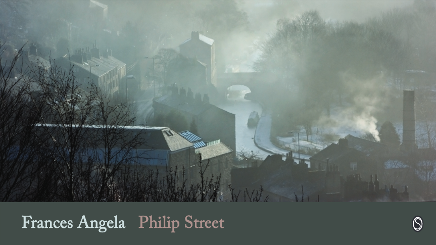

Frances Angela, Philip Street, A Review by Roger Jones.
Frances Angela, Philip Street, Snapshot Press eBooks, UK, 2018, (available at the Snapshot Press Website in PDF format).

Philip Street, Frances Angela’s award-winning e-chapbook from the Snapshot Press, is a wiry, taut collection of haiku and short haibun that tells a personal story of someone living and growing up in an industrial British city. The poems whip through a series of terse vignettes about past and present, and quick but effectively chosen images that depict the narrator’s life in this milieu. The poems manage to present these scenarios with a touch of gloom and yet show how a young person living in such a setting also retrieves from it a surprising amount of joy and adventure.
Angela is excellent at tossing at the reader particularly startling images, as in the very first haiku:
asylum
the darkness
of mother’s hair
Haiku are particularly riveting when they dovetail such disparate elements. Here, the word “asylum”, with all its associations, melts immediately into the image of the narrator’s mother’s hair, and an entire narrative emerges from this coupling. Tonally and thematically, this image also lays a foundation for the work that follows.
The narrator reflects a great deal on the jarring collisions between childhood and adult perceptions. I am reminded, reading these pieces, of Joyce’s treatment of Dublin life in stories like “The Dead” and “Araby.” Angela’s haibun give us such vignettes: a busy world where the depressive drabness and soul-killing tedium of adulthood, with its limitations (especially for women) is full of observation and anguish:
i wanted to be a librarian a saint or an actress at school they told me i could apply for the mill or if lucky a shop my father bought me a brown nylon overall from the co-op you could wash and dry it overnight
dark mornings
the smell of paraffin
on my way to work (“a girl”)
The narrator in these pieces misses nothing. The world depicted is one where joy, surprise, or even miracles can jump up seemingly out of the most unexpected places:
wild hyacinth
mother’s will
in the post
demolished mill it all grows back
my sister skating here comes her yellow hat
These poems present me over and over with a tough, yet tender soul whose heart and mind refuse to be buried under an atmosphere that would stifle and bury the spirit of a less imaginative, inventive individual. Angela’s attention to exact and essential detail is consistently sharp, surprising, and delightful. As a reader, I am never sure what a situation will yield:
catechism class the length of her cane
Angela’s four minimalist haibun here are smoothly woven into the overall tone and grain of the surrounding haiku. Many writers rely, as Angela does, on an absence of punctuation for effect in haibun. In Philip Street, this technique creates a strong sense of restlessness, discontinuity, anxiety, and the speedy flow of life in a cluttered place and time. The immediacy of imagery creates a sense of our viewing an old newsreel of an earlier age. Structurally, the contents here quickly move through a largely autobiographical chronology, though the imagery keeps us grounded simultaneously in the narrator’s conscious sense of the here and now. The autobiography is by necessity skeletal. The details sketch out main impressions that suffice to give us a view of the whole.
In all, this chapbook is also a marvelous illustration of the advantages of the chapbook form. The impression is quick but immediate, and lasting. The implicit narrative is to-the-bone sparse but clear. The details are compelling and unforgettable. Philip Street comes across as an indelible place in a distinct and well-defined time. We read what we read to visit such a place and time for the purpose of stepping out of self a moment and experiencing something new and unfamiliar. Such is one’s experience with Philip Street, a terrific group of connected pieces showing us a place and a life to which the reader will want to return often.
|